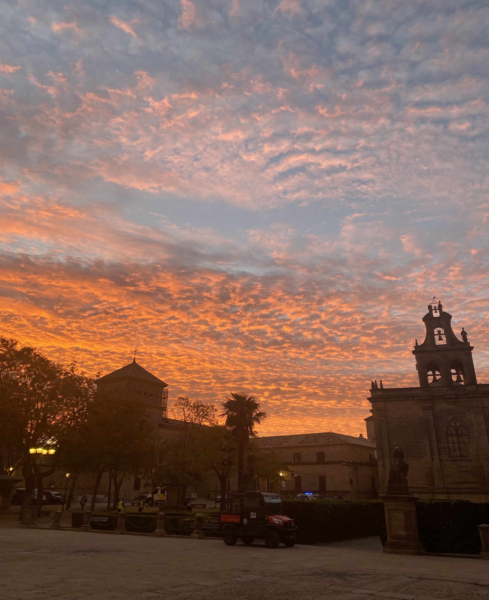
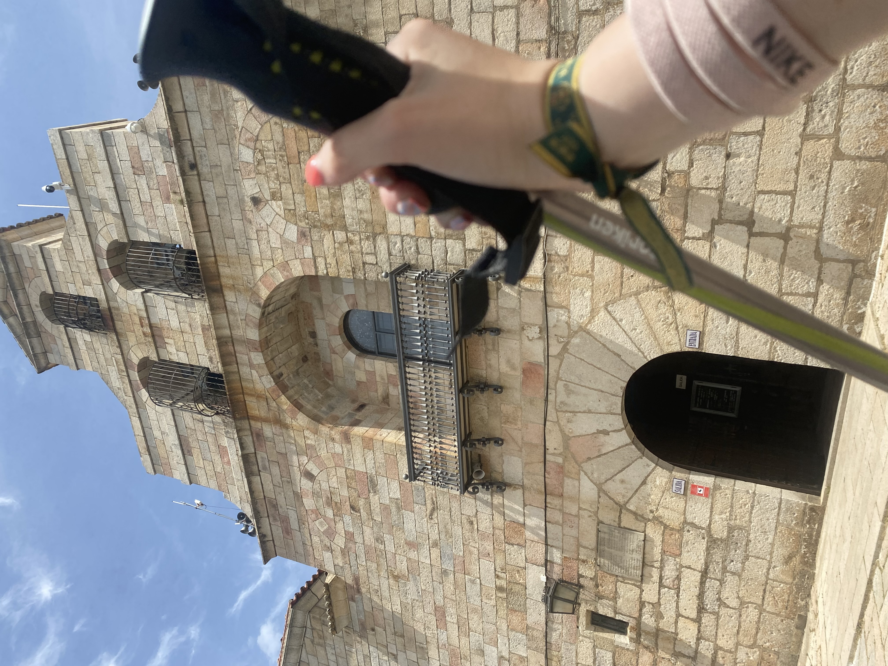
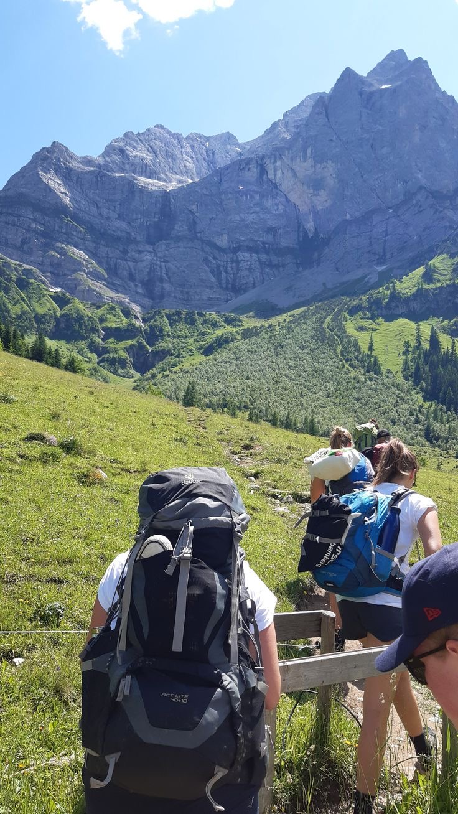
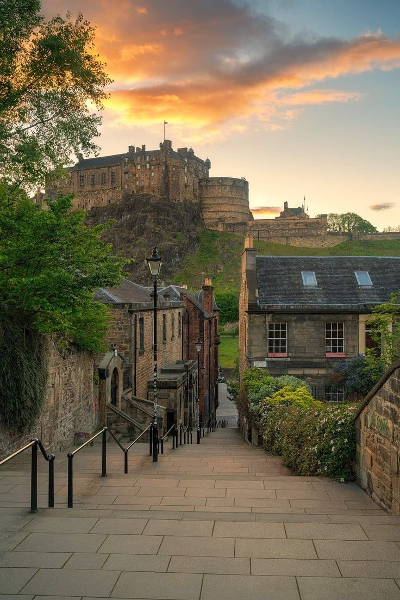

un poco de mí
| Mi nombre es María José, actualmente tengo 17 años y estoy cursando 2ºBTO de ciencias tecnologicas. Soy la hermana más pequeña de 4 hermanos y tita de 3 sobrinos. |
aficiones
|  | ||
| Me encanta la danza en todos sus palos y llevo practicandola desde los 3 años. Pero sin duda lo que más me transmite y hace sentir es el flamenco. Desgraciadamente, por mis estudios no le puedo dedicar el tiempo que me gustaría. | Los atardeceres y amaneceres me transmiten mucha paz y me mantienen desconectada durante unos minutos, es por eso que son tan importantes para mi. Es un momento que disfruto mucho y me gusta dedicarmelo. | Pasar tiempo con mis amigos es imprescindible en mis dias. Soy una persona muy cariñosa y siempre me gusta estar acompañada de ellos para pasarlo bien y poder tener un tiempo de calidad que poder recordar. |
proyectos
- Realizados
- Por realizar
|  | Peregrinaje hacia la Virgen de la Cabeza. En el año 2023 conseguí el reto que desde pequeña me propuse. Subir esos 100km andando hasta el santuario y aunque fue una experiencia con muchos sentimientos encontrados, mereció la pena sin duda. |
|  | Viajar a Escocia. Uno de mis hermanos lleva viviendo en Glasgow 5 años y todavía no he podido ir a visitarle. Llevamos mucho tiempo preparando este viaje y mi estancia allí con él asique estoy segura que se cumplirá en breves. |  | Ir en Interrail. Dentro de unos años me encantaría poder hacer un interrail yo sola. Creo que es una experiencia que te aporta muchos aprendizajes y el ir sola te ayuda a socializar y a enfrentarte a tus miedos. |